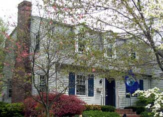

One Saturday morning in April, I had just settled into my chair at the New River Valley Green Homes Seminars and Tour when Ed Tuchler of Shelter Alternatives got my attention. “What could you go into your house and unplug, right now, that you would not miss for two months?” he asked. Note to self: Replace the rechargeable phone that never gets used with a hard-wired model.
By lunch, I knew exactly where to plant a “thermal tree” near my house to tame winter winds and cool down summer sun. And I learned the best place on my property for a solar array would be the hard-to-mow sunny slope of my yard rather than my south-facing roof. In the afternoon, I admired the cavelike wonder of one homeowner’s Icynene spray foam insulation and studied graphs that showed how rising fuel costs have hastened the payback on a Waterfurnace GeoThermal HVAC system. If this sounds like your kind of fun, don't miss your chance to talk with experts and homeowners at a green home tour near you.
Green building organizations such as the New Mexico chapter of the U.S. Green Building Council have sponsored green home tours for years, but rising interest in green building and remodeling has led mainstream builder groups such as the Home Builders Association in the Raleigh-Durham area of North Carolina to sponsor tours. Energy fairs, such as those planned in Wisconsin June 20-22 and Michigan June 27-29, are also popular events.
Local newspapers are a good place to find announcements of similar happenings in your area, which are especially easy to find during the first weekend in October, when the American Solar Energy Society (ASES) coordinates tours in hundreds of communities across the country. The ASES Web site lists tours by state, including “early-bird” events scheduled during the spring and summer.
As you tour, be prepared to learn from fellow participants who ask hard questions about costs and efficiency. The guy who sat next to me in the morning seminars turned out to be the local straw-bale building expert! And here's one last bit of advice: Wear slip-on shoes. After all, if you were to allow a hundred strangers to tromp through your newly greened home, it would be nice if they left their shoes at the door.
|
 BARBARA PLEASANT To green up this home in Blacksburg, Va., the owners worked from the top down, first sealing cracks in their “envelope” before insulating their “shell.” It's easy to pick up the lingo of green remodeling on a green homes tour. |
BARBARA PLEASANT In addition to featuring new homes and landscaping innovations such as rain gardens, many green homes tours show ways to remodel homes in need of sustainable rehabilitation. |
|